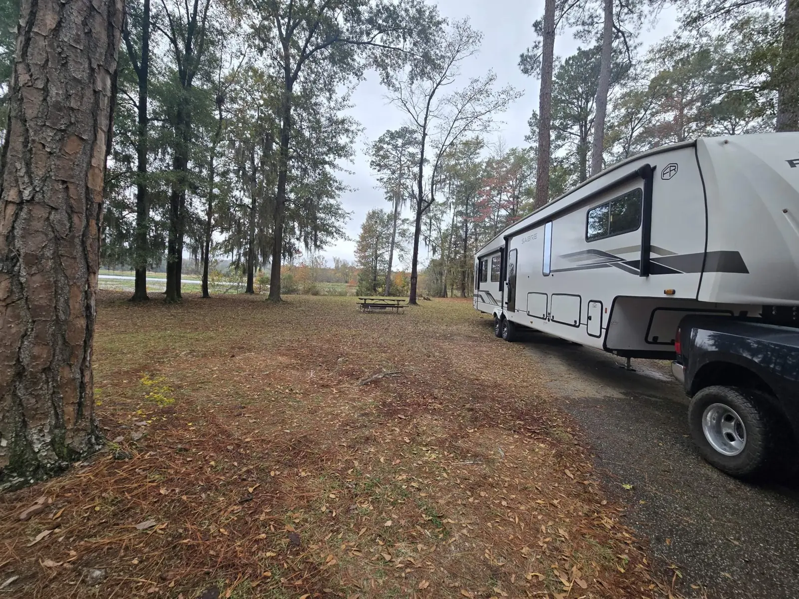
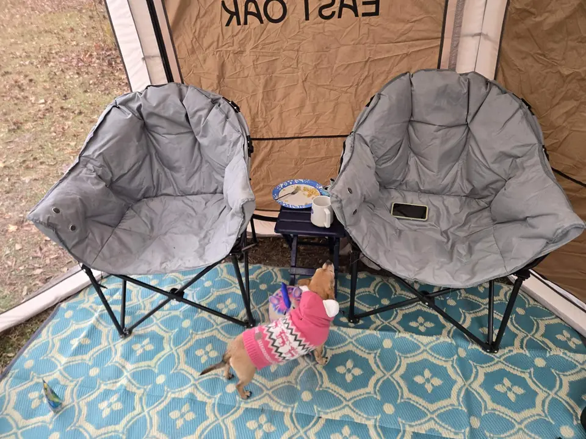
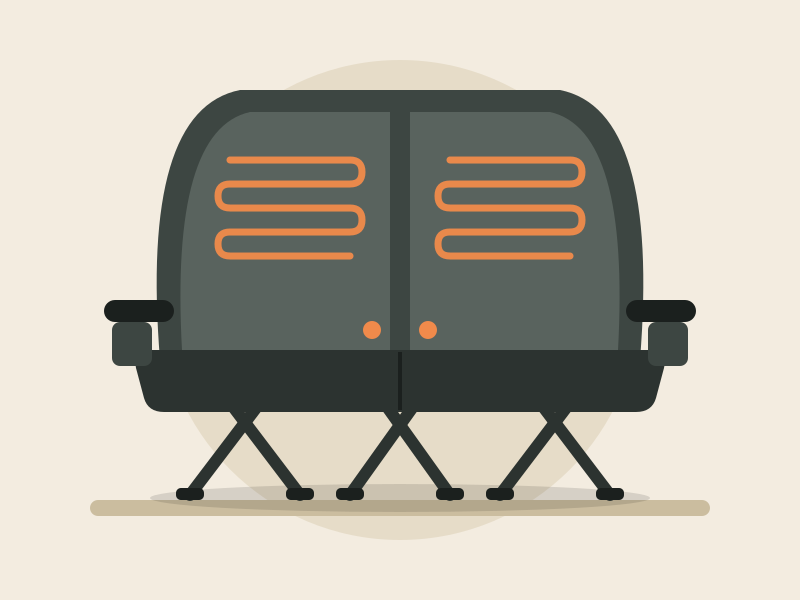
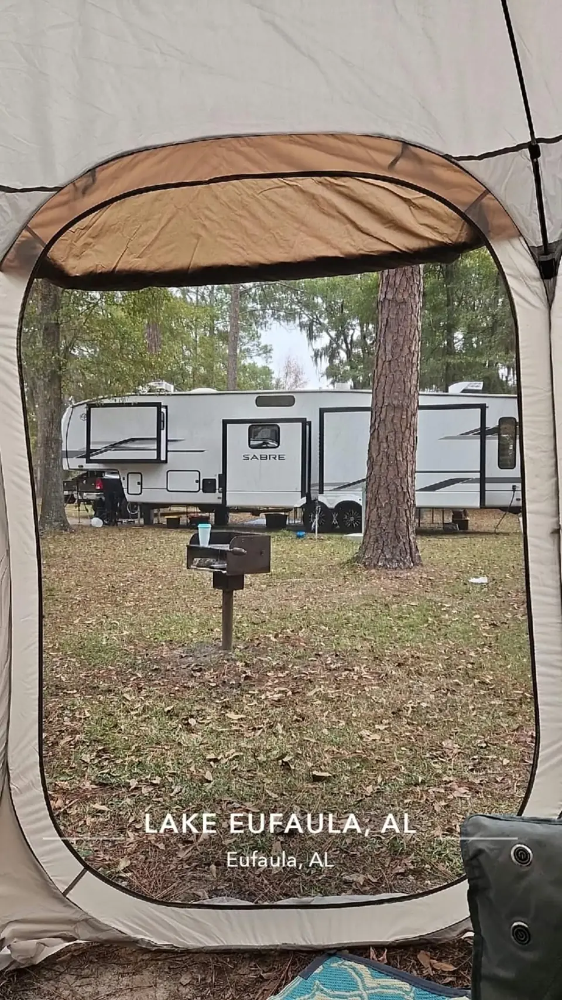
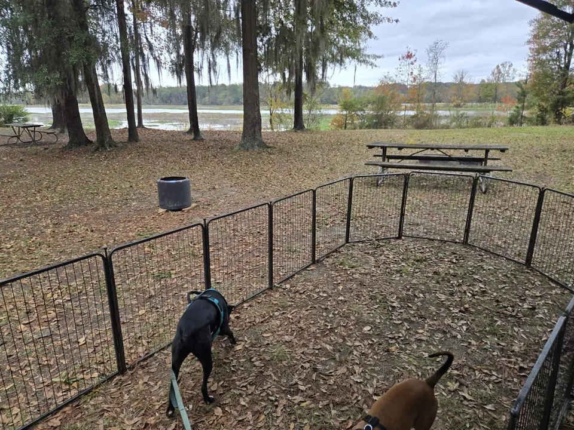
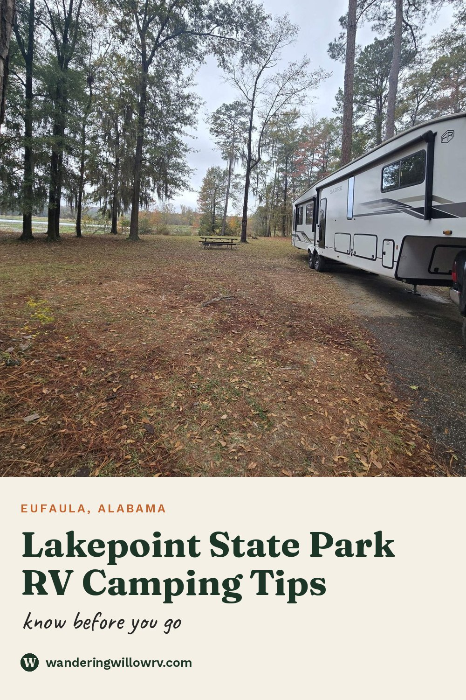
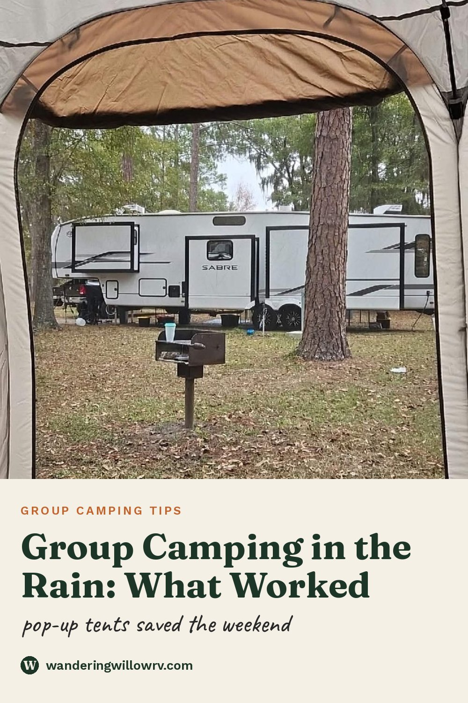
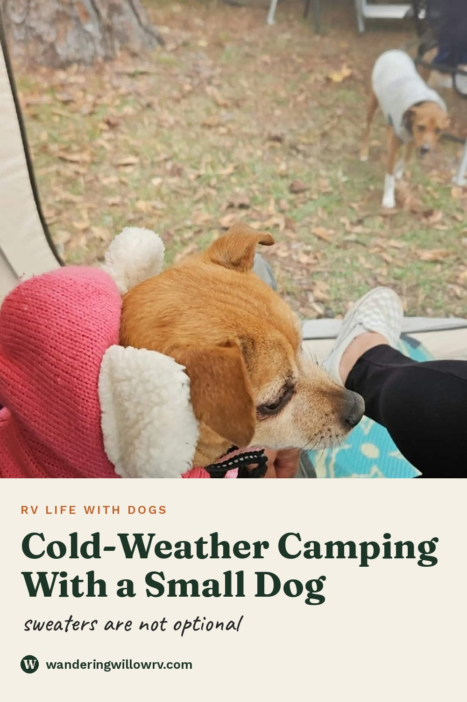
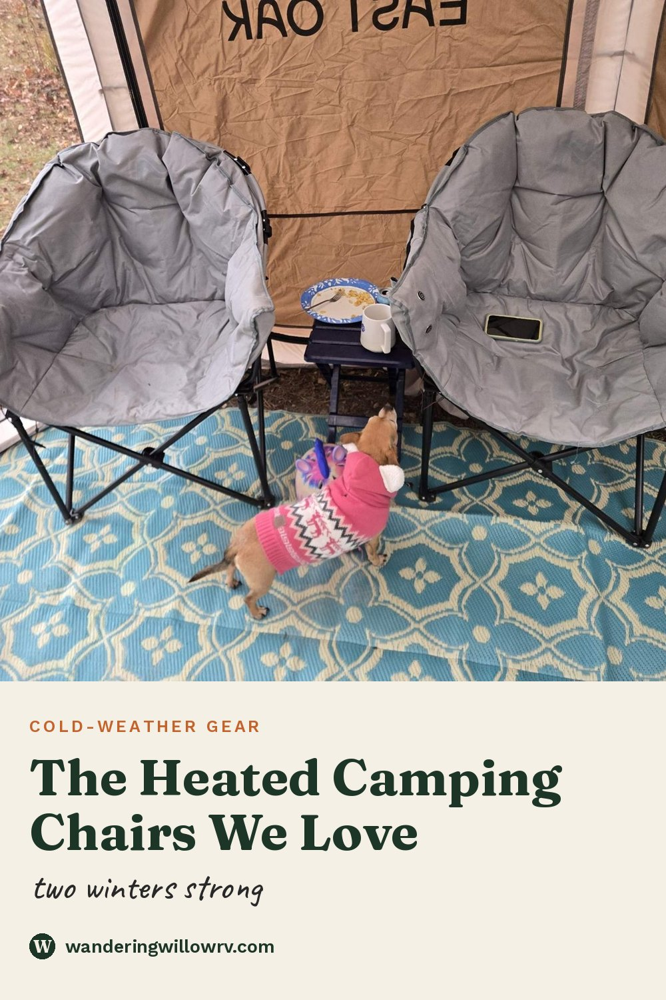

Celebrations, S'mores & Spanish Moss: A Three-Family Weekend at Lakepoint State Park
A chilly, rainy November weekend on Lake Eufaula with two other families. We brought birthday cakes and board games, saw deer every morning, and Willow wore her sweater all weekend. Plus everything we'd do differently getting there.

Disclosure: This post contains affiliate links. If you buy through our links we may earn a small commission at no extra cost to you. We only recommend gear we actually use.
Know before you go: Lakepoint State Park
- Check in at the marina. The campground check-in isn't at a campground gate, so go to the marina first.
- The gate is on a timer. After you enter the code, it stays open for only about 30 seconds. With more than one camper, leave space between rigs and let each driver enter the code.
- Stay on the main highways. Use US-280 and the interstates instead of the "fastest" route down county roads.
- The lodge has a restaurant. It's an easy dinner the first night.
Some trips are about the miles. This one was about the people. We left Friday morning and headed to Lakepoint State Park in Eufaula, Alabama, with two other families. Between the three of us we had a whole month of birthdays and anniversaries to catch up on, so we packed the cake and the s'mores and pointed the Sabre toward Lake Eufaula.
Getting in (and getting settled)
We had to work a bit to get in. At Lakepoint, check-in happens at the marina, not at a campground gate. That left us a little turned around finding where to go and getting settled at our site. Once we were parked, though, the view made up for it. Tall pines, Spanish moss, and the lake right out our window.
One more heads-up for groups: the campground gate opens on a timer for about 30 seconds after you enter the code. When you're traveling with several campers, don't try to squeeze through behind the rig ahead of you. Leave space, wait for the gate to close, and let each driver enter the code. A gate arm coming down on a fifth wheel is no way to start a weekend.
Night one: dinner at the lodge
After a full day of driving and setting up, nobody wanted to cook. So the first night we all walked over to the restaurant inside the lodge. A big Christmas tree was already up in the lobby. A fishing tournament was going on that weekend, and we could hear the anglers laughing down the halls from the conference rooms. It felt like the whole park was in a good mood.
With multiple campers, plan to eat out the first night. Nobody wants to cook and clean after a full day of travel and setup.
When there's no restaurant nearby, our fallback is a crock-pot meal that heats up while we set up. This time we knew the lodge was right there.
Rain, cold, and three families under the tents
The weather didn't fully cooperate. It was cold and we got rain, but extra pop-up tents saved the weekend. We had one tent for cooking and one for dry seating, and that gave three families room to eat, talk, and stay out of the drizzle.
Our heated folding chairs, now in their second year with us, kept the chill off at night. Willow had a blast, but she definitely needed her sweater.

Heated Camping Chairs (2-Pack)
We've used heated chairs for two winters. Our original model isn't sold anymore, so this is the updated version. Grab a spare battery so one can charge while you sit.
Check price
Illustration. Ours is folded up in the camper.
We own itDouble Heated Camping Chair
A heated loveseat for two. It's the warmest seat around the fire on a cold night.
Check price
Pop-Up Tent with a Clear Top
Extra tents for cooking and dry seating made the rainy weekend work. This updated version has a clear top, so it's bright inside even on a gray day. Heads-up: it takes at least two people to fold back up.
Check price
Portable Dog Fence
It gives the pups a safe spot to sniff around at the site. We bought two sets so we can make the pen bigger at sites with more room.
Check priceCake, candles, and Sorry
For the celebrations we kept it easy. We brought bundt cakes and cupcakes with little candles, including gluten-free options, so everyone got to blow out a candle. Nothing to slice and no plates needed. The kids played Sorry and other board games under the tents. We finished every evening with s'mores.
Morning deer
The mornings were our favorite part. Deer wandered through the park every day, and we saw at least one near the trails each morning. Walk the dogs early with a warm cup of coffee and you'll probably have company.
Our travel tips for this trip (and any group trip)
Change your map settings before you leave
Our GPS's fastest route sent us down county roads with no lane striping and potholes everywhere. With a 5th wheel behind us it actually took longer than staying on the main highways would have. Next time we're sticking to US-280 and the interstates. Before you leave, check your map app: turn on "avoid unpaved roads" if it has it, or add a waypoint on the main highway so the route stays there. An RV-specific GPS or app is even better. Main highways also mean easier pit stops, with truck-stop fuel lanes, pull-through room, and restrooms.
Fuel up before you hook up
Before we hitch up to go home, we always take the truck by itself to fill up. That way we're not trying to get a camper in and out of a gas station we don't know.
Pack for the weather you might get
- Extra pop-up tents: one for cooking and one for dry seating when more than one family is camping together.
- Heated chairs and blankets for November nights on the lake.
- Sweaters for small dogs. Willow approves.
- Board games for rainy afternoons under the tents.
Would we go back?
Absolutely. By Sunday evening we were home, a little damp, a little tired, and already talking about the next trip with this crew. Lakepoint is a great base for a group. You get lake views, a lodge restaurant for the nights you don't want to cook, and deer at breakfast.
Pin it for later
Planning a Lakepoint trip or a cold-weather weekend with friends? Save one of these to your Pinterest board.




See all 11 photos from this trip in our album →
Happy trails, y'all.
— James & Mallory 🐾